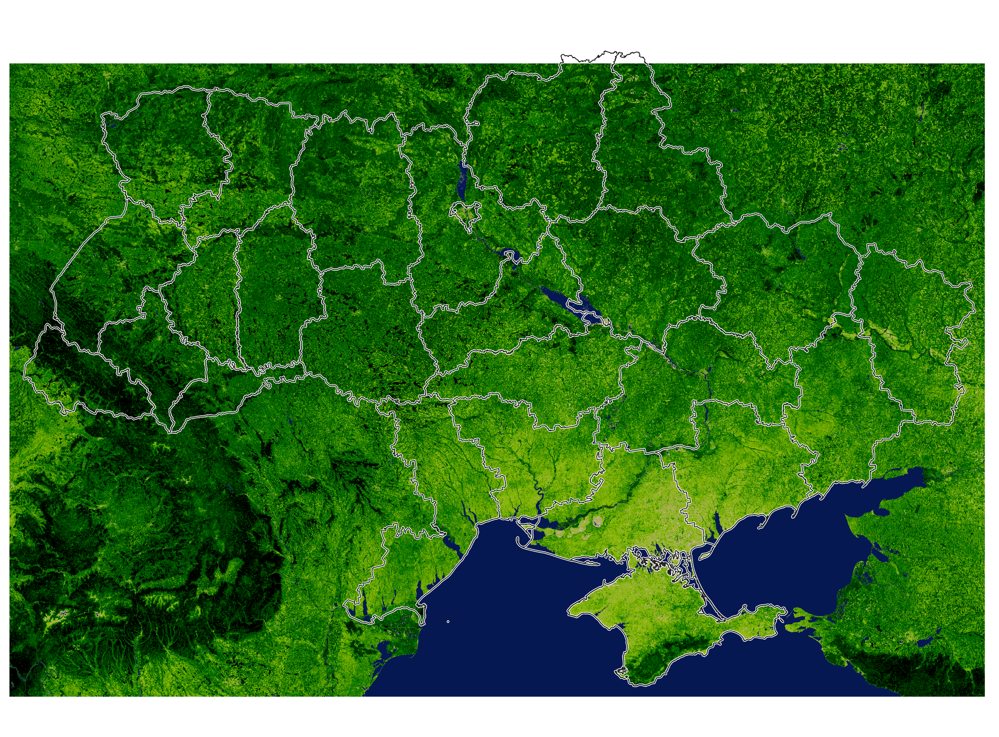

5.6 Функціонування, продуктивність, й екосистемні послуги
В екології іноді корисно зупинитись і задати собі питання “і що?”, особливо якщо вам колись доведеться вести конструктивний діалог із кимось, хто далекий від біології. От як довести інженерам, політикам, чи просто місцевим громадам, що природу є сенс охороняти? От навіщо нам заповідник в горах, якщо там можна побудувати туристичну базу, вітроелектростанцію, чи просто використати цю безтолкову площу із якоюсь користю для лісового чи сільського господарства? Ви скажете, що це б знищило чутливі середовища існування рідкісних видів. І що?
На питання навіщо нам біорізноманіття і навіщо нам екосистеми допомагає відповісти поняття екосистемного функціонування (ecosystem functioning) – сума “процесів в екосистемі, як-то фізичні, біохімічні, та біологічні транфсормації речовин та енергії, котрі залучають живі організми та їх взаємодії із іншими організмами та середовищем” (Scherer-Lorenzen et al. 2022). Функціонування екосистем саме по собі може видаватись доволі розмитим поняттям, прояви якого може бути іноді доволі складно обчислити (наприклад, потоки енергії та речовин). Фокус на функціонування екостем притаманний поглядам школи Юджина Одума, котрий у своєму історичному підручнику з екології приділяв особливу увагу потокам речовин та енергії між різними частинами екосистем. На практиці, дослідження функціонування екосистем в подібному ключі вимагатимуть точних вимірювань, наприклад, об’єму карбон діоксиду що його виділяє ґрунт, чи об’єму добрив що вимиваються з ґрунту замість того щоби бути поглинутими рослинами (Dijkstra et al. 2007). Загалом же, існує чимало вимірюваних проявів екосистемного функціонування, в той час як саме по собі поняття є доволі широким.
Одним із найбільш очевидним проявом функціонування екосистеми є її продуктивність (productivity) – сума біомаси, котра утворюється в екосистемі. Найчастіше продуктивність вимірюють в одиницях сухої біомаси, або ж переводять в масу генерованих сполук Карбону, усі зважені на площу та час. Відтак, в літературі ви часто побачите одиниці на кшталт “гC/м²/рік” або “г·м⁻²·рік⁻¹”, що просто каже нам скільки грамів сполук Карбону було згенеровано екосистемою за рік часу на одному квадратному метрі.
Хоча й, в принципі, в оцінку продуктивності й можна включити утворення біомаси гетеротрофів, найчастіше такі оцінки включають лише біомасу синтезовану в процесі фотосинтезу – тобто первинну продукцію (primary production). Фотосинтез відповідальний за синтез біомаси, однак варто мати на увазі, що частина цієї свіжосинтезованої біомаси використовується самою рослиною для власної життєдіяльності, і тому сумарна біомаса доступна для споживання іншими елементами екосистеми буде завжди меншою від сумарно синтезованої. Через це іноді розділяють поняття брутто-продукції (gross primary productivity) та її залишок після рослинної респірації, нетто-продукцію (net primary productivity). Брутто-продуктивність можна вимірювати через інтенсивність фотосинтезу: наприклад, із застосуванням мультиспектральних111 супутникових знімків (із супутників Sentinel чи Landsat) можна оцінити ступінь “зеленості” ландшафтів за допомогою нормалізованого диференційного вегетаційного індексу (normalized difference vegetation index, NDVI)112 (Рис. 5.20). Нетто-продукцію ж необхідно вимірювати в польових умовах, наприклад, через оцінку сухої біомаси рослин по завершенню сезону росту. Варто зауважити, що біомасу рослин часто вимірюють окремо для надземних (aboveground) і підземних (belowground) частин.

Рис. 5.20: Нормалізований диференційний вегетаційний індекс для більшості території України, обчислений зі знімків супутника Sentinel-2 між квітнем та серпнем 2026 року за допомогою Google Earth Engine. Грубо кажучи, темніші зелені кольори відповідають вищій зеленій біомасі рослинності, а, відтак, продуктивності екосистем.
Мабуть, не дивно що продуктивність спадає першою на думку коли постає питання функціонування екосистем. Можна доцільно припустити, що в екосистемах із інтенсивним функціонуванням продуктивність буде високою. Як біорізноманіття впливає на продуктивність екосистем? Найбільш відомим прикладом дослідження цього питання буде довгостроковий проект в екологічному дослідницькому заповіднику Седар Крік Університету Міннесоти (Cedar Creek Ecosystem Science Reserve) під егідою Девіда Тілмана. В 1990-их роках, маленька армія помічників Тілмана повністю знищила шість гектарів поля: вся рослинність була видалена гербіцидами, про всяк випадок на поверхні ґрунту провели контрольовану пожежу, потім ще про всяк випадок видалили верхні 8 см ґрунту аби видалити потенційний ефект банку насіння, все добряче розпушили, і, наостанок, проборонували. Таке мертве поле стало початковою точкою для конструювання штучних контрольованих угруповань рослин.
Це поле розділили на 167 ділянок розміром 9×9 м. Кожну ділянку засіяли насінням із фонду 18 можливих видів: 8 трав’янистих рослин (і C3, i C4, якщо ви цікавитесь фізіологією рослин), 4 бобових, 4 видами із різнотрав’я, і 2 видами дерев. Кожна ділянка була засіяна випадковою кількістю видів: одним, двома, чотирма, вісьмома, або шістнадцятьма. У всіх випадках, комбінації видів також були випадковими. Відтак, експеримент полягав в дуже контрольованому видовому багатству рослинного угруповання, і після польового сезону на кожній ділянці зібрали біомасу рослин і її виміряли. І дійсно, первинна продуктивність ділянок із більшим різноманіттям виявилась вищою порівняно із ділянками із монокультурами або низькими рівнями видового різноманіття (Tilman et al. 1997). Продовження цього експерименту протягом десятиріч із постійним виполюванням інвазійних рослин з ділянок лише підтвердили цей висновок (Tilman et al. 2001, Fornara & Tilman 2009).
Подібні висновки виплили і з подібних пізніших експериментів: і порівняння продуктивності лучних угруповань з різних районів Європи, що відрізняються видовим багатством (Loreau & Hector 2001), і п’ятнадцятирічні маніпуляції видовим багатством лучних угруповань в так званому Експерименті “Джена” в Німеччині (Weissner et al. 2017) однозначно вказують на позитивний зв’язок між видовим різноманіттям й продуктивністю, принаймні, в рослинних угрупованнях. Аби перевірити наскільки такий висновок можна узагальнити на інші трофічні рівні, Наїїм та співавтори (1994) побудували угруповання із різних комбінації редуцентів (черви та колемболи), первинних продуцентів (рослини), первинних травоїдів (слимаки та комахи), та вторинних гетеротрофів (паразитоїди комах) в герметичних камерах із контрольованою вологістю, температурою, освітленням, та поливом. Навіть коли потенційні джерела статистичного шуму і потенційних викривлень експерименту були виключені, автори виявили позитивний вплив видового різноманіття складних угруповань на інтенсивність респірації, первинної продуктивності, засвоєння поживних речовин, та утримання води в ґрунті (Naeem et al. 1994).
Отже, від різноманітних угруповань варто очікувати вищої продуктивності. В культивуванні рослин існує ідея трансгресивного надврожаю (transgressive overyielding) – суміжне вирощування декількох культур разом має вищу продуктивність, аніж можна було би очікувати від окремого вирощуваня монокультур тих же видів (Cardinale et al. 2007). Однак, екосистемне функціонування існує не продуктивністю єдиною. Зверніть увагу, що останній згаданий експеримент також звертав увагу і на інші речі на кшталт засвоєння води й поживних речовин. Звісно, можна сказати що змінні на кшталт інтенсивність фотосинтезу, засвоєння рослинами сполук Нітрогену, чи темпи респірації корелюють із первинною продукцією і, відтак, є лише проксі-метриками до продуктивності екосистеми. Однак, їх, мабуть, варто вважати метриками відокремленими від метрик продуктивності в чистому вигляді, як-то синтезованої біомаси. Всі ці метрики вказують на різні грані функціонування екосистеми. В цілому, функціонування екосистем можна умовно розділити на продуктивність, обіг речовин, стабільність, та опір інвазіям, однак це зовсім не вичерпний список.
Для людей та людської економіки екосистемне функціонування можна перекласти в терміни послуг, що їх екосистеми надають. Розгляньте наступний приклад. Одне велике дерево утворює близько 110 кг кисню на рік (Nowak et al. 2007). Станом на 2026 рік, один кілограм комерційно доступного кисню коштував близько 0.50 доларів США. Отже, якби дерево вимагало оплати за свій кисень, то $55 на рік було би аргументованою компенсацією. Здається, що це небагато, поки не помножити це все на кількість дерев у лісі. Ба більше, якщо раптом дерево вирішить перестати продавати нам кисень, то довго прожити навряд чи вдасться.
Такий погляд відомий як екосистемні послуги (ecosystem services) – “умови і процеси, через котрі природні екосистеми, і види котрі їх утворюють, підтримують людську життєдіяльність” (Daily 1997). Цей підхід часто стає в нагоді задля ілюстрації екосистемного функціонування для широкої аудиторії, хоча він є більш релевантним для економістів аніж екологів (Toman 1998). Екосистемні послуги можна поділити на (Wallace 2007):
провізійні (їжа, вода, тканини, генетичні ресурси, хімічні сполуки),
регуляторні (очищення повітря й питної води, кліматоутворення, запилення рослин, противага ерозії, природні вороги шкідників та патогенів),
підтримуючі (ґрунтоутворення, первинна продукція, обіг речовин),
культурні (рекреація, естетична роль, освіта).
Екосистемні послуги можна по-різному розглядати відносно утилітарної цінності для людей: від різноманіття переваг котрі напряму впливають на наше благополуччя через використання екосистемних “товарів” (наприклад, їжі) чи послуг (наприклад, елімінація відходів) котрі мають монетарну вартість більше за внутрішній валовий продукт багатьох країн (Costanza et al. 1997), аж до екосистемних процесів що відбуваються без помітної вигоди для громадськості. Хоча ми і сприймаємо екосистемні послуги за належне, збільшення населення планети із асоційованими глобальними змінами, скоріш за все, спричинять зменшення доступність екосистемних послуг для окремих верств населення (Cazalis et al. 2018, Roy et al. 2018). Нативні екосистеми часто є більш ефективними в продукуванні екосистемних послуг порівняно із відновленими після збурень, тому уникнення вимирання видів і збереження недоторканості екосистем є імперативом для стабільного надходження цих послуг (Benayas et al. 2009); крім того, економічно вигіднішим було би збереження екосистем в їх первинному вигляді, аніж дороговартісне відновлення після певної трансформації. Крім того, боротьба із інвазійними видами часто також має чималий економічний ефект, тому опір інвазіям і збереження стабільності екосистем варто не забувати в питанні екосистемних послуг.
З екологічної точки зори, найбільшим аргументом проти використання поняття екосистемних послуг був би його антропоцентризм. Оцінка їх монетарної вартості викликає хибне враження, наче екосистеми існують задля людського добробуту. Натомість, екосистемні послуги є радше побічними ефектами екосистемного функціонування і процесів в екосистемах на кшталт первинної продукції, розкладання, запиленя, ґрунтоутворення, обігу речовин тощо (Truchy et al. 2015). Екосистемні послуги є тільки однією із граней екосистемного функціонування (котре, як ми вже з’ясували, залежить від біорізноманіття).
Тобто таких, що фотографують поверхню планети не тільки в кольорах червоного, зеленого, та блакитного каналів, а й в інших частинах спектра світла, зокрема, інфрачервоному.↩︎
\(\text{NDVI} = \frac{(\text{близький інфрачервоний} - \text{червоний})}{(\text{близький інфрачервоний} + \text{червоний})}\)↩︎